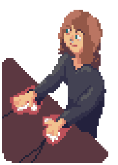

.▄▄▄ · ▄ ▄ ▪ • ▄ · ▄ ▄· ▄▄ ▐█ ▀. ▪█▌▐█ █▌ ▪ ▐█ · ▐▌▐█▪ █▌ •▀▀▀█▄•▐█▀▀█•▐█·▄▄▄█▌·▄▀▄█▌▐█▌▐█▪ ▐▄▄▪▐█ ▐█ ▐█▌▐█▐█ .██▐█▪ ██·▀███▀· •▀▀▀▀ ▀▀▀▀ · ▪ ▀▀▀▀• ▀▀▀▀• ▐█• /index /about /rss --------- ▀ --
.▄▄▄ · ▄ ▄ ▪ • ▄ · ▄ ▄· ▄▄ ▐█ ▀. ▪█▌▐█ █▌ ▪ ▐█ · ▐▌▐█▪ █▌ •▀▀▀█▄•▐█▀▀█•▐█·▄▄▄█▌·▄▀▄█▌▐█▌▐█▪ ▐▄▄▪▐█ ▐█ ▐█▌▐█▐█ .██▐█▪ ██·▀███▀· •▀▀▀▀ ▀▀▀▀ · ▪ ▀▀▀▀• ▀▀▀▀• ▐█• /index /about /rss --------- ▀ --
I honestly started this blog so that I could store documentation that wouldn't stay in my head.
In time it's turned into a place for me to express what I am passionate about and what's been on my mind.

You can call me Shiddy. I studied Computer Science and do lots of things adjacent to technology. I spend most of my energy in the security field.
I like learning and applying low level tech. Often that means learning about older technologies rather than new ones. It also means that I care about the underlying components of any given project.
I find it gratifying to distill some of these experiences into writing or videos and share them with you. It's my hope that you can see how learning and applying that knowledge is rewarding and delightful.
I was irony-poisoned; Cool sounding names never seemed to fit me. "Shiddy" stuck when playing a game with friends, and at this point the name proves to be a nice filter for people that are too full of themselves. I've given up on trying to sound smart and putting on airs. We all should learn to laugh at ourselves more.